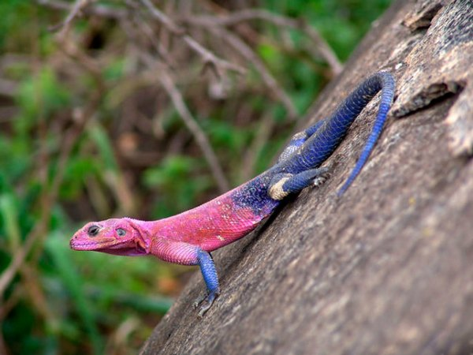

Як відрізнити самця від самки?
Самець і самка ящірки виглядають майже однаково, хоча і є ряд ознак, за якими можна визначити статеву приналежність ящірки.
- У деяких видів ящірок, наприклад василісків і зелених ігуан, самці мають яскравий гребінь на спині.
- Шпори на лапах – ще одна ознака «мужика» серед ящірок.
- Також можна визначити стать ящірки по горлових мішках, які є у окремих видів.
В цілому всі методи визначення статі у ящірки не певні і точно дізнатися це хлопчик чи дівчинка можна тільки через аналіз крові ящірки на тестостерон, зроблений в професійній ветеринарній клініці.
Місцепроживання
Де живуть ящірки? Ящірки живуть на всіх континентах, за винятком, зрозуміло, Антарктиди. В цілому вони люблять теплий клімат, їх можна зустріти в лісах, луках, степах, пустелях будь-якої частини світу. Вони відмінно пересуваються по будь-яких поверхнях, міцно чіпляються за них своїми лапами.

Цікавий факт: скельні види ящірок просто таки відмінні стрибуни, висота їх стрибків часом може досягати до 4 метрів.
Комодський варан – найбільша ящірка у світі
І найнебезпечніша. Комодський варан, найбільший серед усіх існуючих ящірок у світі заслуговує окремої згадки. Мешкають комодські варани в Індонезії на острові Комодо і вражають своїми просто таки неймовірними розмірами – комодский варан має до 3 метрів довжини, при вазі у 80-85 кг. Не дивно, що ці ящірки-гіганти часом нападають навіть на велику рогату худобу.
Чималу небезпеку комодський варан представляє і в тому числі для людини – зафіксовано кілька випадків нападів цих варанів на людей, що закінчилися для останніх з летальним результатом.
Найменша ящірка у світі
Харагуанський сферо, що мешкає в Домінікані і на Віргінських островах примітний тим, що це найменша ящірка в світі. Його розміри складуть 16-19 мм, а вага – 0,2 грама.
Розмноження
Шлюбний період у ящірок відбувається навесні або на початку літа. Великі ящірки розмножуються раз на рік, більш дрібні кілька разів за сезон. Якщо на одну самку претендує кілька самців, то вона дістається найбільшому з них. Більш маленькі самці ящери вважають за краще не вступати в сутичку з сильним противником. Однак якщо розміри претендентів рівні, то між ними таки зав’язується бійка, під час якої самці люто кусають один одного. В результаті самка дістається більш сильному переможцю.
Через деякий час після запліднення вагітна самка відкладає яйця, дрібні ящірки за раз відкладають до 4 яєць, в той час як більші можуть відкласти за раз аж до 18 яєць. Також різняться і розміри яєць, наприклад, у маленького круглопалого гекона розмір яйця не перевищує кілька міліметрів в довжину, в той час як у комодського варана довжина яйця становить 10 см.
Дбайливі ящірки-матусі свою кладку закопують під землю або ховають в різних затишних місцях, печерах, норах. Інкубаційний період у яєць ящірок триває від 3 тижнів до 1,5 місяця, після цього періоду на світ з’являються маленькі ящірки, які тут же починають самостійне життя.